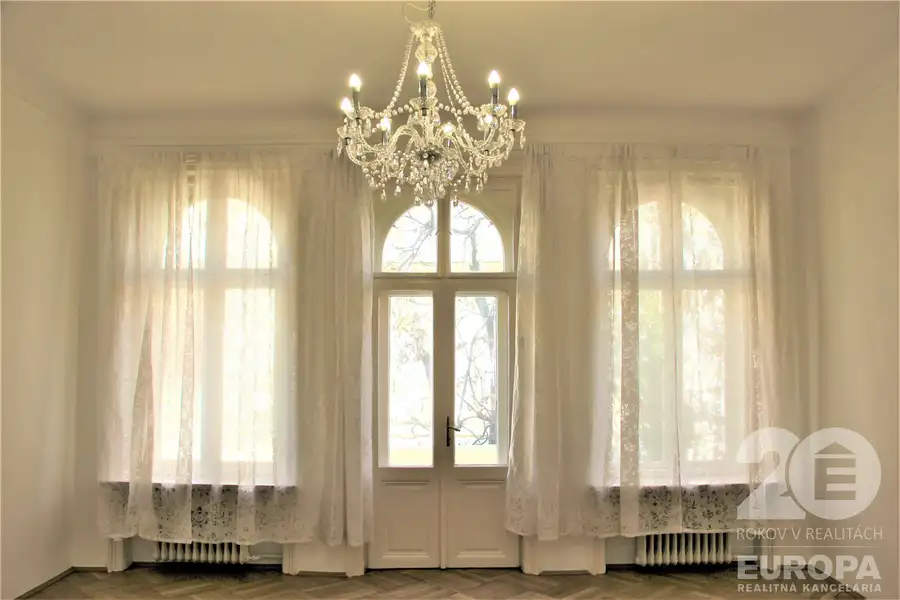
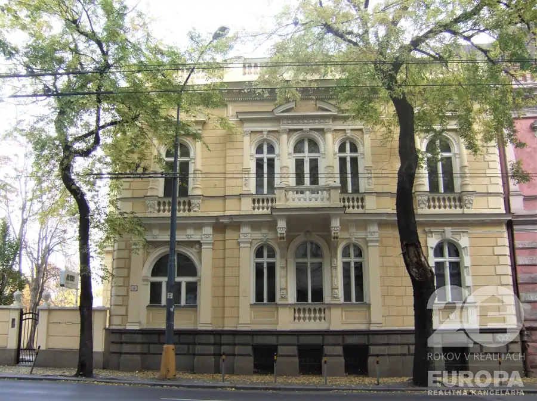
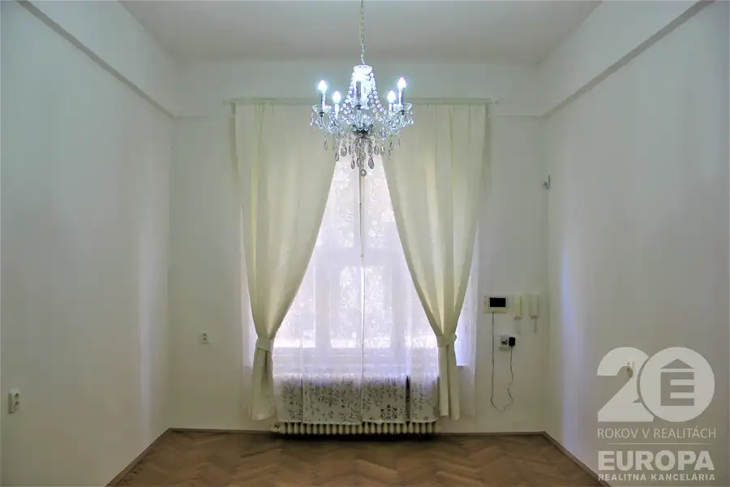
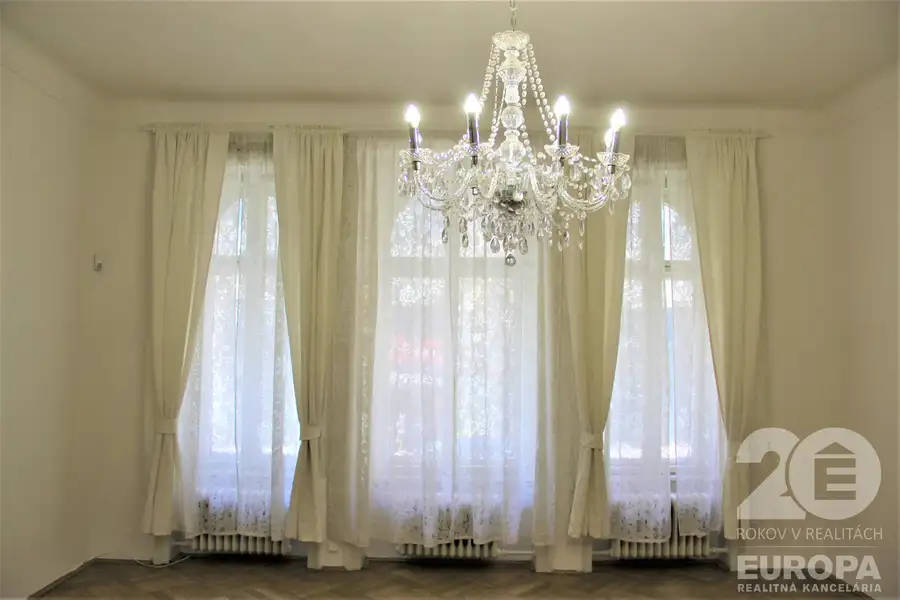
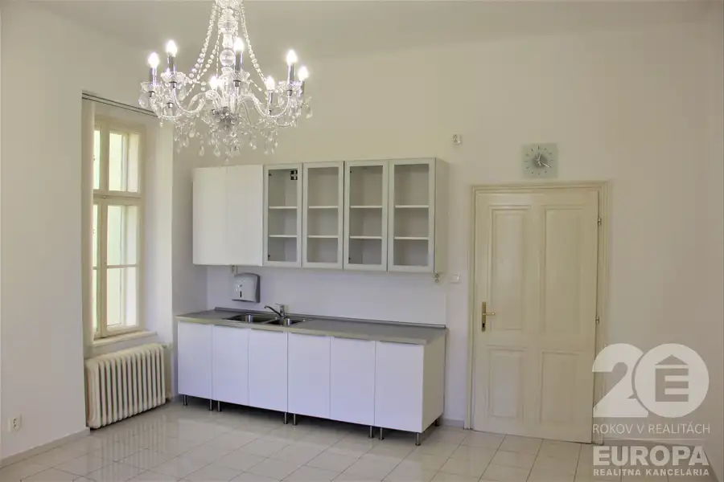
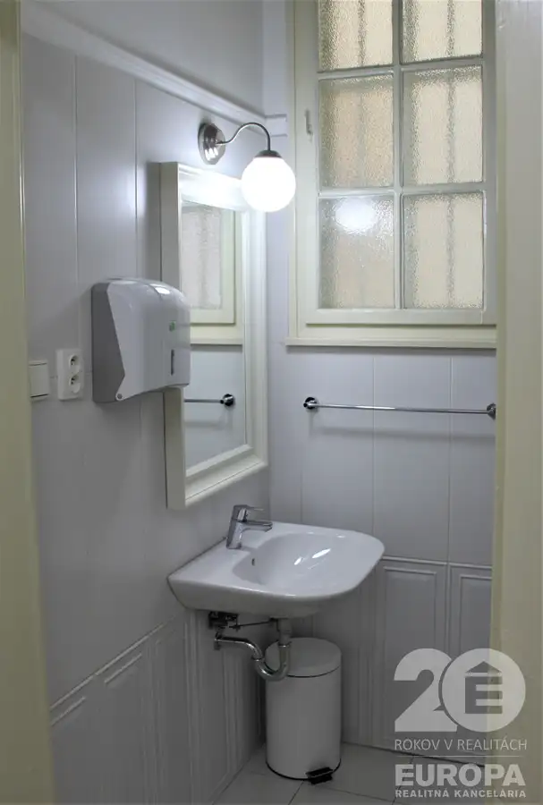
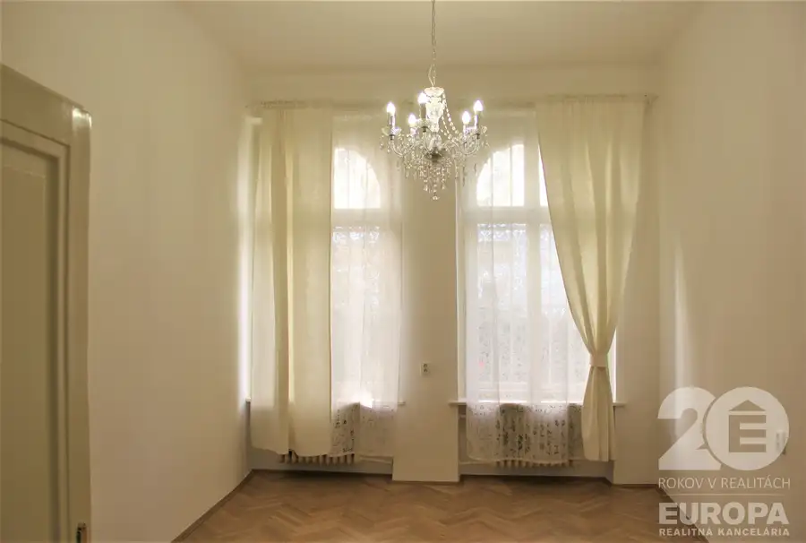
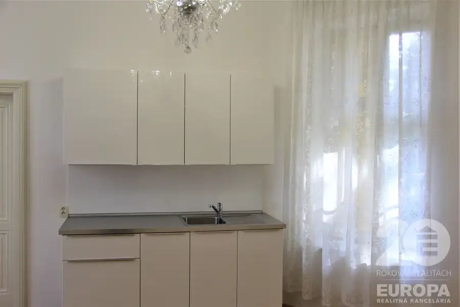

Luxusná vila Štefánikova ulica 758 m2 3x garáž 12x parkovanie Staré Mesto – prenájom
Staré Mesto, Bratislava








- Plocha758 m²
- StavKompletná rekonštrukcia
- VlastníctvoOsobné
O nehnuteľnosti
Luxusná vila s historickou eleganciou, spolu 758,3 m2, kompletná rekonštrukcia, nezariadená, suterén 224,60 m2, prízemie 247,70 m2 a terasa 10,20 m2, poschodie 256,40 m2 a 2 balkóny s terasou 19,40 m2, 3 garážové miesta aj s priestorom na bicykle alebo motorky, 12 parkovacích miest, dvor s parkovou úpravou, pozemok celkom 990 m2, Štefánikova ulica, Staré Mesto – prenájom.Luxusná vila na Štefánikovej ulici je národná kultúrna pamiatka. Kompletná rekonštrukcia bola citlivo prevedená so zachovaním pôvodných materiálov a stavebných prvkov, čím sa vytvoril luxusný vzhľad exteriéru aj interiéru vily. Dve podlažia domu môžu byť využité na kancelárske priestory alebo bývanie, prípadne na kombináciu týchto účelov. /Pôdorysy sú v závere obrázkov./ Hlavný vstup je z prednej terasy. Z chodbovej haly máte prístupné 2 samostatné časti, každá je vybavená zariadenou kuchyňou, kúpeľňou, wc. Prvá časť so 7 miestnosťami má orientáciu do ulice, druhá časť je orientovaná do dvora, tiež so 7 miestnosťami. Poschodie vily má samostatný vstup z dvora po schodišti, ktoré je prepojené aj s chodbovou halou na prízemí. Na poschodí sa nachádza celkovo 14 miestností, z toho 2 zariadené kúpeľne, 2 wc a kuchyňa s kuchynskou linkou. Z veľkej terasy, otočenej do dvora, máte krásny výhľad. Balkóny sú umiestnené nad vstupom a na fasáde do ulice. V interiéri sú obnovené pôvodné okná a dvere, drevené parkety, štukové rímsy a ozdoby a šperkom miestností sú krištáľové lustre. Vybavenie kuchýň, kúpeľní a wc je moderné, no vhodne dopĺňajúce celkový charakter vily. V zrekonštruovanom suteréne sú aj miestnosti využiteľné ako kancelárie s oknami do dvora, sklady a technické zariadenia pre dom.Príjazd je cez bránu s diaľkovým otváraním, v dvoch garážach sú 3 garážové státia a priestor pre bicykle, alebo motorky. Na dvore sa dá parkovať na 12 státiach. Parková úprava dotvára príjemnú atmosféru luxusného sídla.Vila sa nachádza na Štefánikovej ulici, v blízkosti Grassalkovichovej záhrady a susediacej záhrady Úradu vlády, s dobrým cestným napojením a viacerými linkami mhd. Na ulici sú vyhradené pruhy pre mhd a bicykle.Preferencia dlhodobého nájmu, min. na 5 rokov. K dispozícii ihneď. Cena mesačného nájmu je 8 400 Eur /zahŕňa vilu, dvor, garáže, parkovanie/.Energie + služby podľa spotreby, v réžii nájomcu.Provízia pre RK 2 100 Eur. Depozit vo výške mes. nájmu sa platí pri podpise zmluvy.Kontakt na Licencovaného realitného makléra: akad. arch. Jana Antalová, PhD., 0914 777 820, jana.antalova@rkeuropa.sk
Parametre
- Druh
- Kancelárie, administratívne priestory
- Dátum zverejnenia
- 30. 03. 2026
- Energetický certifikát budovy
- nie je
- Rok výstavby
- 1895
- Stav nehnuteľnosti
- Kompletná rekonštrukcia
- Typ
- Prenájom
- Typ konštrukcie
- Tehlová
- Vlastníctvo
- Osobné
- Vybavenie
- Balkón, Lodžia, Terasa, Garáž, Vonkajšie parkovacie miesto
- Úžitková plocha
- 758 m²